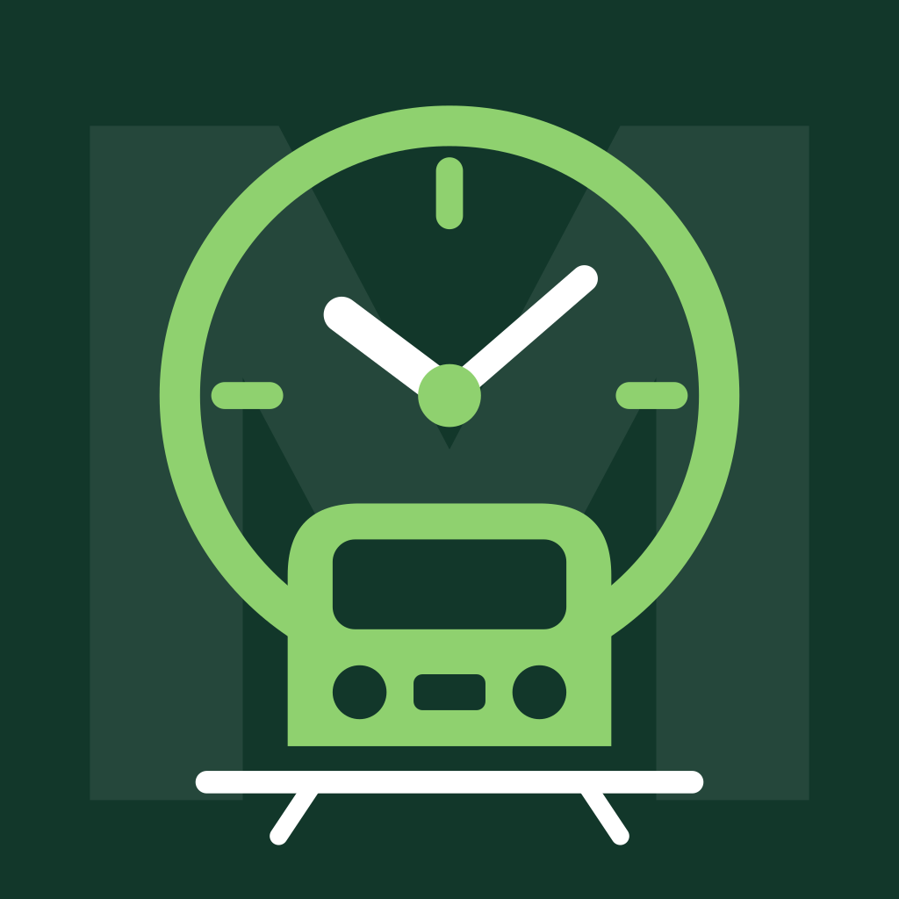
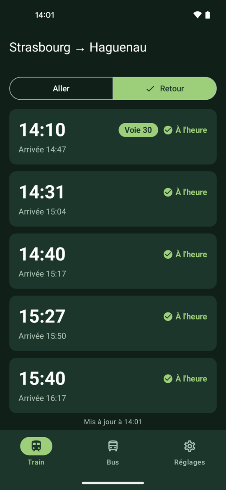
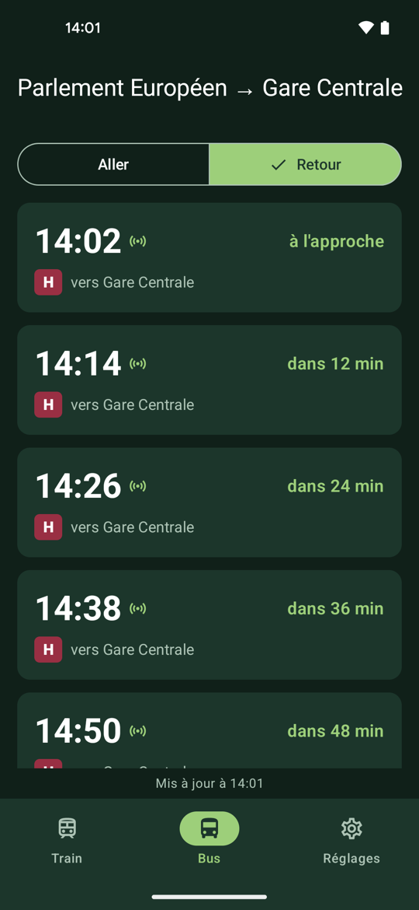
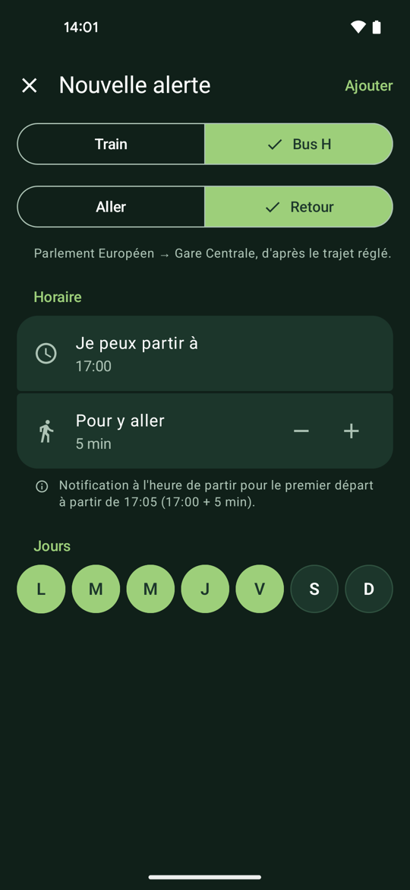
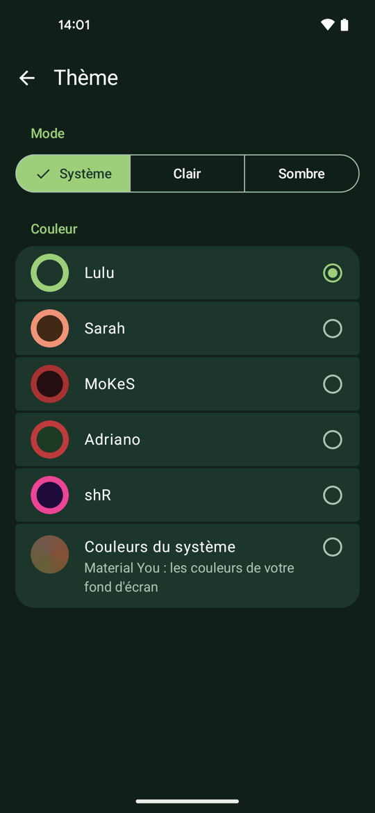
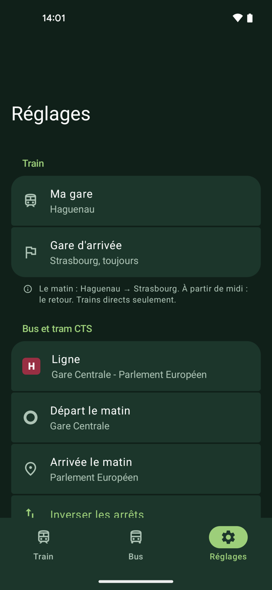
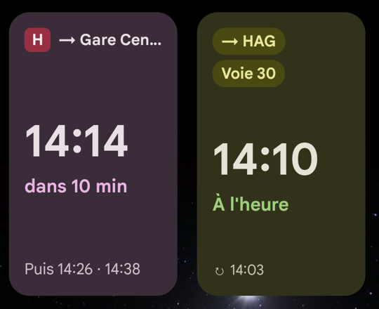
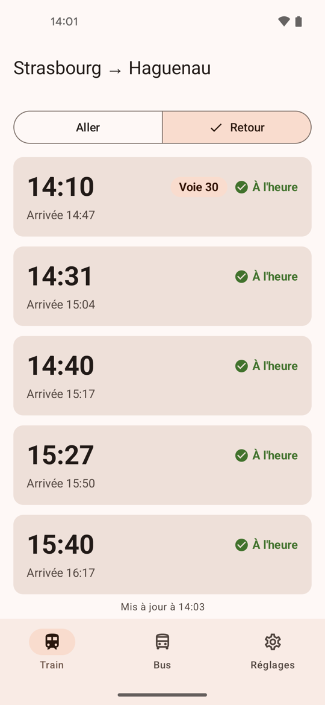

MokesTrainLes prochains trains entre Haguenau et Strasbourg avec leurs retards et leur voie, le bus et le tram CTS en temps réel, des widgets et une alerte avant de partir.







Version de test. Les mises à jour du pilote s'installeront par-dessus. La version définitive demandera de désinstaller celle-ci d'abord, et tes réglages seront à refaire.